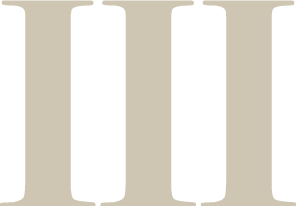

BOLD.
Portfolio
My portfolio intendeds to provide insight into the work that I do. I want my portfolio to showcase the variety, aesthetics and skill that I am capable of. My portfolio captures the tone that I am trying to portray in the work I do. I want it to showcase accessible, simplistic and innovative design features that I tend to use in my work.
Contents
Website Prototype - Goodberry's
For this assignment I was required to find an outdated website and code a new and improved working prototype. The improvements I made included improving the accessibility, reducing the amount of main navigations items and incorporating a modern style.
Mobile App - myHealth
For this assignment I was required to go through the design thinking process to ideate and create a prototype of a health app in Adobe XD. The app needed to be accessible, have at least four main functions and promote innovative design.
Website Prototype - Contour 556
For this assignment I was required to create a professional website using semantic HTML, advanced CSS and responsive design techniques.
About me
Hello! My name is Bianca and I am currently a student studying a Bachelor of Interaction Design. University of Canberra defines Interaction Design as "the practice of designing interactive digital products, environments, systems, services and products for use by people".
I have had the opportunity to employ my newly acquired skills into my Junior Designer role at the Department of Finance. In this role I am responsible for assisting the senior designer in creating design artefacts, updating website content and creating illustrations and icons for a whole of government application.
Skills
Attention to detail
I produce quality work with minimal mistakes and errors.
Personable
I am outgoing and friendly towards everyone I meet.

Clear communication
I can convey complex things into simple ideas.
Time management
I thoughtfully plan out tasks and always meet deadlines.
Professionalism
I am reliable, set high standards for myself and put care into the work that I achieve.
Design products
Proficient in using Photoshop, InDesign, Illustrator, and XD.
Experience
Jul 2020 — Present
Junior Designer
Department of Finance
- Design and build artefacts for the GovTEAMS websites.
- Create and update the brand’s design templates and style guides. As well as create icons and branding elements for the website.
- Draft content pages for the website using a boostrap theme with a basic understanding of CSS and HTML.
Feb 2019 — Jul 2020
Recruitment Advisor
Department of Finance
- Managed the administrative component of onboarding staff into the department, including the Letter of Offer process.
- Created internal and external job advertisements and supported the panel members throughout the whole process of onboarding new staff.